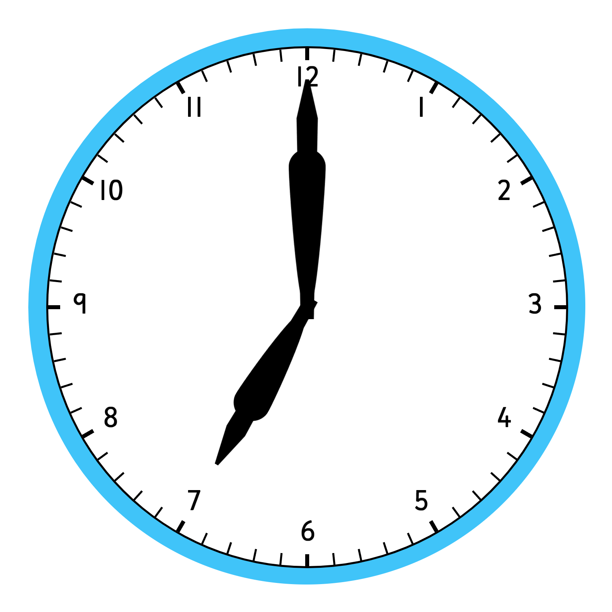
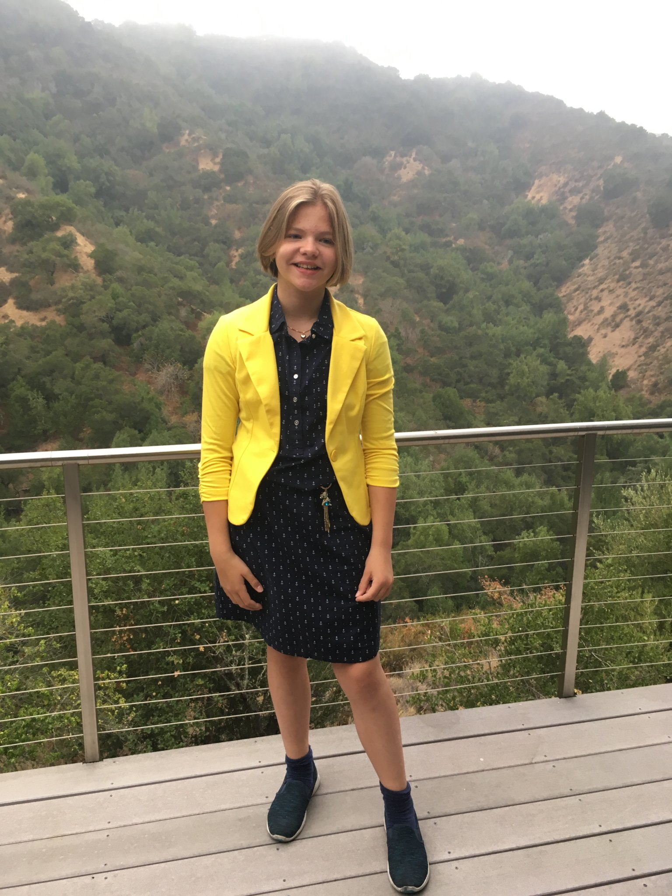

| Back | Next |
|  |  |
For my first day at Egan, I was so excited! Since 6th grade had ended, I had been thrilled to go to Egan! A new school, new friends, a new environment, and new things to learn were awaiting me. The photo above shows me during early 7th grade on a Blue and Gold Day.